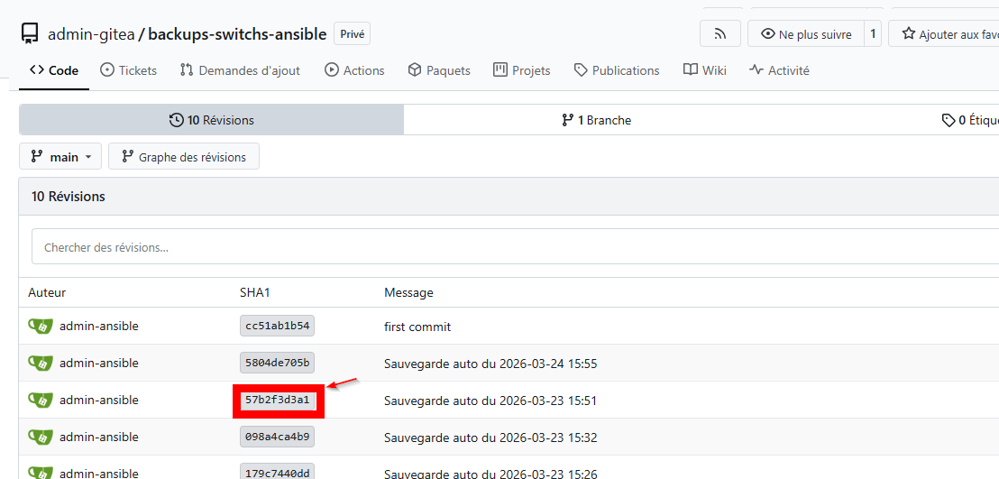

Projets / Sauvegarde automatique des switchs
Sauvegarde automatique des switchs
Chaque nuit, la configuration de 43 switchs répartis sur 3 sites est récupérée par Ansible et versionnée dans Git.
- Contexte
- Alternance, Ensemble scolaire Saint-Benoît
- Stack
- Ansible · Semaphore · Docker · Gitea
- Statut
- En service
- Périmètre
- 43 switchs Aruba et Cisco
Le besoin
Quand un switch tombe en panne ou qu'une modification casse quelque chose, il faut pouvoir retrouver sa configuration, et savoir ce qui a changé. Avec des dizaines de switchs sur plusieurs sites, la sauvegarde à la main n'est jamais faite au bon moment.
Avant, on exportait la configuration à la main, switch par switch, une fois par an. Entre deux exports, personne ne savait ce qui avait bougé.
Le fonctionnement
L'inventaire range les switchs par site. Par défaut ils sont pilotés comme des Aruba ; les 7 switchs
Cisco sont marqués ansible_network_os=ios. Le playbook passe en mode enable,
lit la configuration courante, puis l'écrit dans un fichier par switch :
- name: Récupérer la configuration courante
ansible.netcommon.cli_command:
command: show running-config
register: config_output
- name: Écrire la configuration du switch
delegate_to: localhost
ansible.builtin.copy:
content: "{{ config_output.stdout }}"
dest: "./backups/{{ nom_site }}/{{ inventory_hostname }}.cfg"
Le nom du fichier ne contient pas de date : chaque nuit, le fichier est écrasé et c'est Git qui garde
l'historique. Comparer deux versions montre exactement ce qui a changé sur un switch. L'envoi vers le
dépôt est fait une seule fois à la fin (run_once), et seulement s'il y a eu un changement.

Deux versions
D'abord un serveur dédié. Une machine Ubuntu Server avec Ansible installé par pip, les
collections réseau (ansible.netcommon, community.network,
cisco.ios) et Paramiko pour les connexions SSH. Le playbook se lançait en ligne de commande.
Puis Semaphore, sur le serveur Docker. Semaphore donne une interface web à Ansible : lancement à la main, planification, historique de chaque exécution. Il tourne avec sa base PostgreSQL dans la stack gérée par Portainer. L'image officielle ne contient pas Paramiko : un Dockerfile de trois lignes l'ajoute.
Les points d'attention
- Une clé SSH dédiée (ed25519) permet à Semaphore de lire et d'écrire dans le dépôt Gitea sans mot de passe. Elle est montée dans le conteneur par un volume en lecture seule.
- Un parc hétérogène. Aruba et Cisco ne parlent pas la même langue, certains switchs ont des identifiants différents, et les modèles administrables seulement par interface web sont sortis de l'inventaire.
- Une procédure d'installation et un guide d'utilisation pour que l'équipe puisse ajouter un switch ou relancer une sauvegarde sans moi.
Ce que j'améliorerais
- Chiffrer les identifiants des switchs avec Ansible Vault plutôt que de les laisser dans l'inventaire.
- Être prévenu par e-mail quand une sauvegarde échoue, au lieu de devoir consulter l'historique.
Ce que j'en retiens
Le playbook n'a pas bougé en passant du serveur dédié à Semaphore. Le travail a été de refaire l'inventaire et les identifiants, de monter la clé SSH dans le conteneur, et d'ajouter Paramiko à l'image officielle.